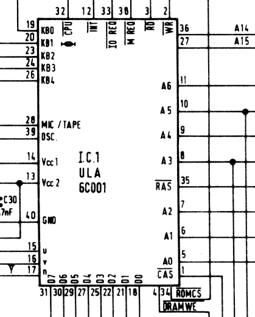

Пады

Типы:
- Tri-state: если активен output enable то пад всегда драйвится, иначе - z
- Open-collector: пад драйвится только когда на пад подаётся значение 0. Когда подаётся значение 1 - пад в состоянии z (чтобы внешние потребители могли его задрайвить нулём). Двунаправленные пады работают аналогично на выход.
| Port | Direction/type | Description |
|---|---|---|
| Vcc2 (AVCC) | Аналоговый VCC для видео ЦАП (+5в) | |
| Vcc1 | +5в | |
| /INT | Output Open-collector | Сигнал прерывания |
| A[6:1] | Output Tri-state | Выходные адреса для VRAM |
| A[0] | Bidir | A0 особенный |
| /WE | Output | WriteEnable для DRAM |
| /RD | Input | RD от проца |
| /WR | Input | WR от проца |
| /CAS | Output Tri-state | Выбор Column для DRAM |
| GND | Общая земля | |
| OSC | Input | Входной клок 14 MHz |
| /MREQ | Input | от проца |
| A[15:14] | Input | от проца старшие разряды адреса, для понимания куда стучимся |
| /RAS | Output Tri-state | Выбор Row для DRAM |
| /ROMCS | Output | ULA решает что проц лезет в ROM по старшим разрядам адреса |
| /IOREQ | Input | от проца |
| /PHICPU | ⚠️ Inverting Output Open-collector | Выход CLK на проц OSC ÷ 4 |
| D[7:6] | Bidir Open-collector | Разряды 6,7 шины данных. D7 - Input Only |
| D[5] | Input | D5 - Input Only |
| SOUND | Bidir Analog | MIC/TAPE для кассет и динамика |
| D[4:0] | Bidir Open-collector | Разряды 0,1,2,3,4 шины данных |
| KB[4:1] | Input | Входы 1,2,3,4 с клавы |
| KB[0] | Bidir Open-collector | Вход 0 клавы, а также может использоваться на выход для Test Mode |
| U,V,/Y | Output Analog | Аналоговый видео выход с ЦАП |